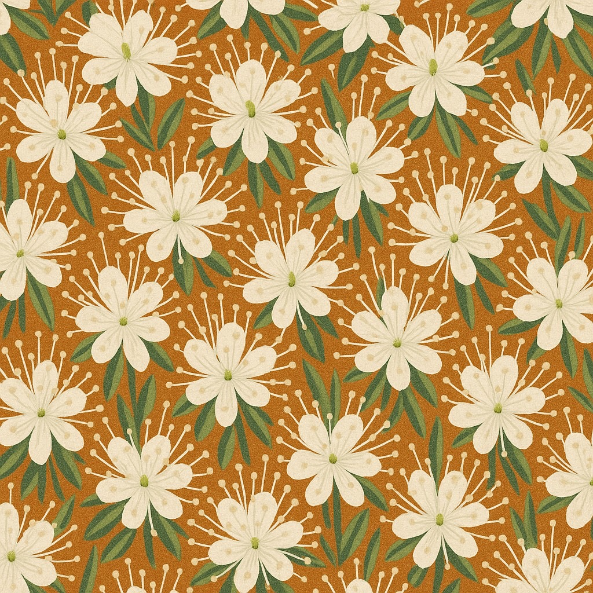
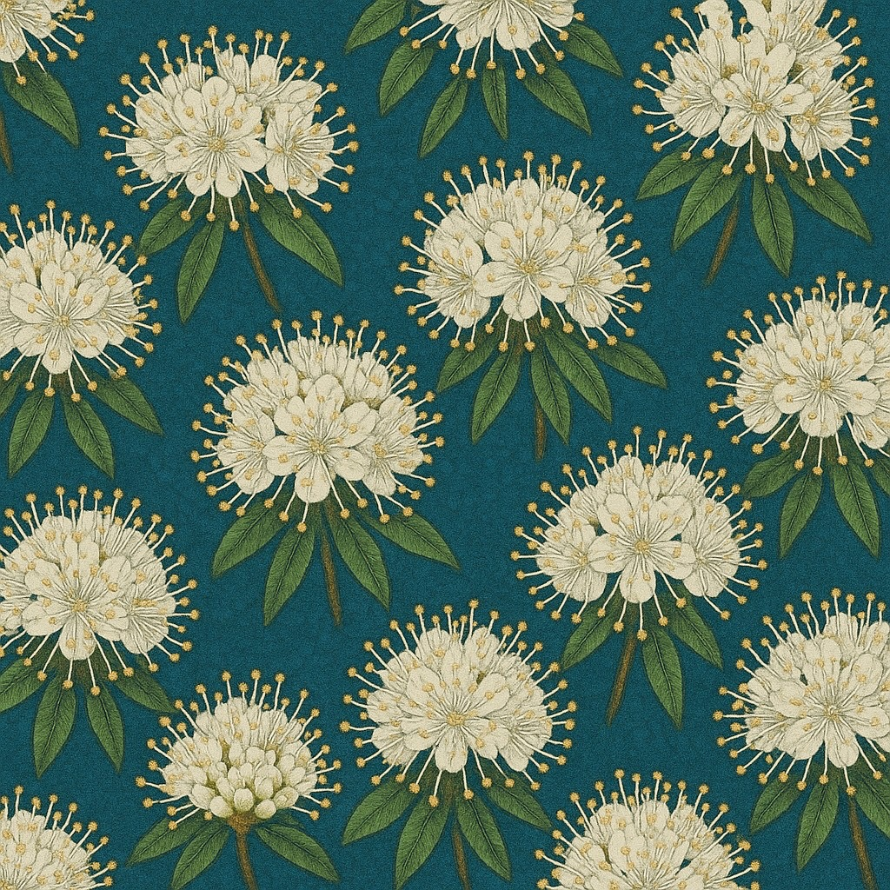
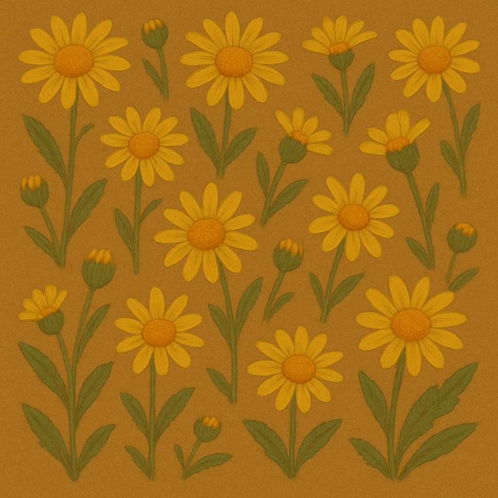
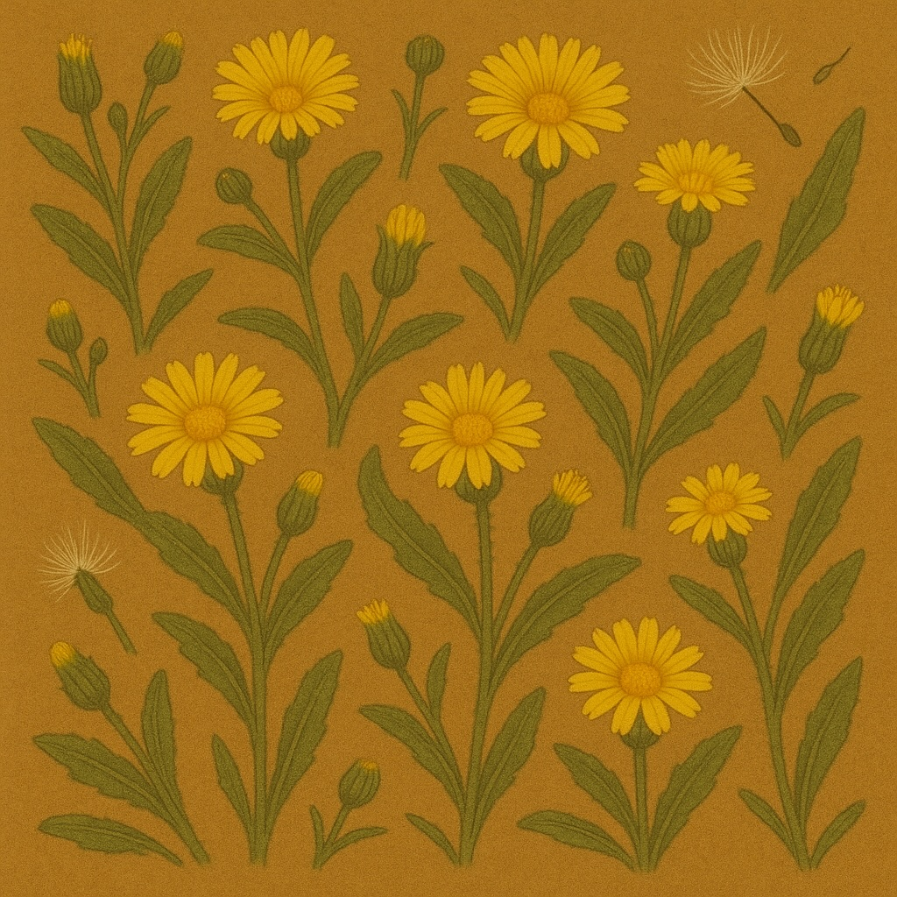
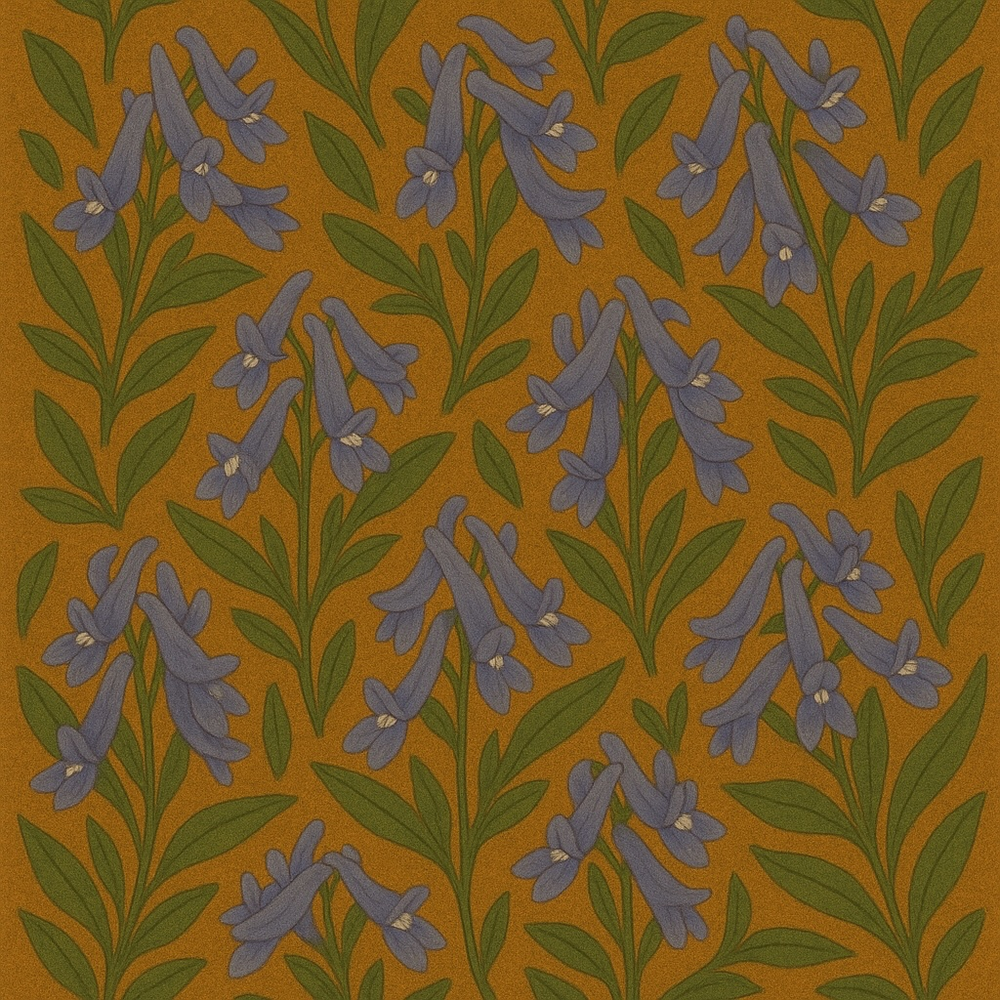
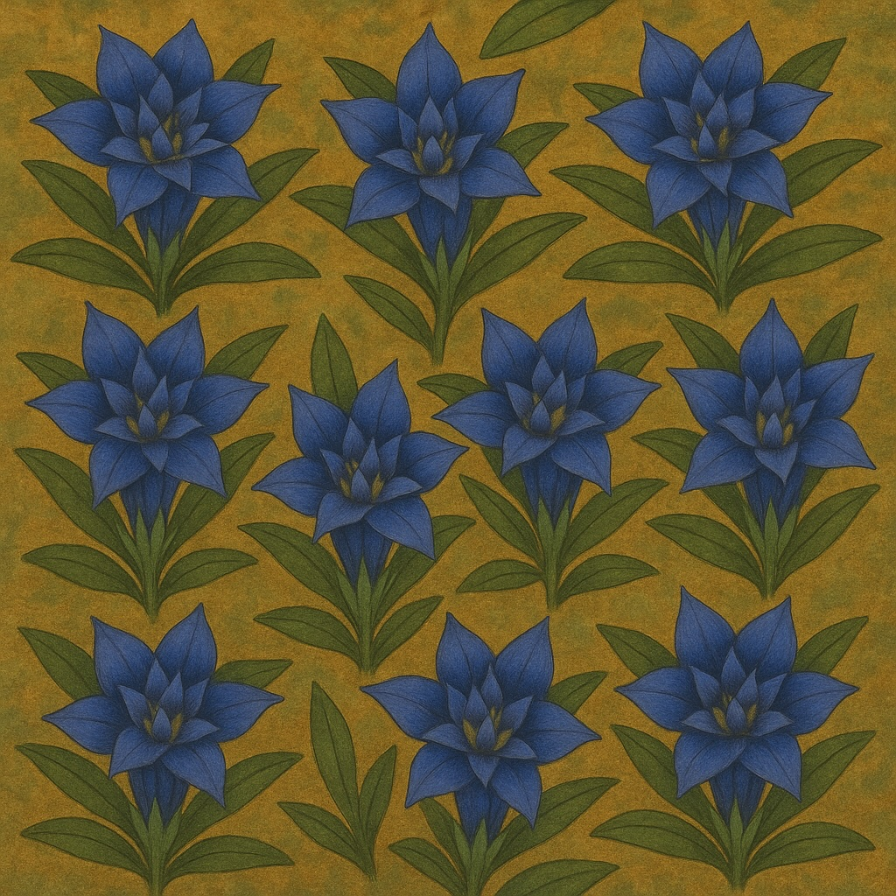
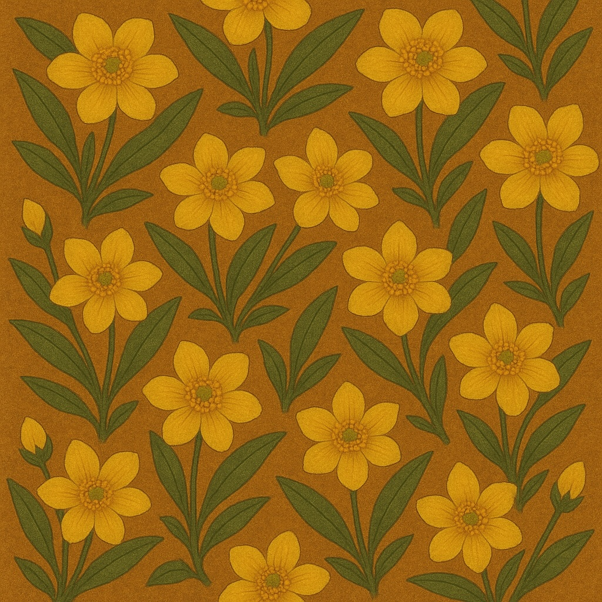

おはな研究所 ——人と自然、そのあわいを探る
衣
洗練と野生の間に立つ


光
影を愛でるための灯火


蝦夷
北の大地が育んだ、野生の息吹







記録
思考と試行の断章
研究所について

私たちは、消費社会の喧騒と、土地に根ざした自然の質感との間に、極めて個人的で繊細なバランスポイントを探ることを目的とした研究所です。
人と自然、その境界が曖昧になるような「あわい」の領域にこそ、新しい豊かさの可能性があると信じています。当研究所では、その探求の過程そのものを「創造」と呼び、衣食住、そして美学に渡る様々な試みを記録しています。
美学の探求: 花懶
咲くことさえ面倒な、美の一片（ひとひら）

「花」が本来持つ華やかさや生命力に対して、「懶（ものう）さ」や「怠惰さ」を重ねることで、咲ききらない、あるいは咲くことを拒否したような、未完で、退廃的な美しさを表現する、私たちが見出した美学的な造語です。
積極的に咲き誇ることよりも、咲く前の曖昧で静かな時間、萎れゆく美、意志の希薄さ、自己放棄のような姿に価値を見出す。「咲かない」ことが選択であるかのように、そこに主体性と反抗、そして耽美主義的な香りも含んでいます。
花懶はただの「怠け」ではなく、咲かない美の美学化であり、反抗の詩情化なのです。